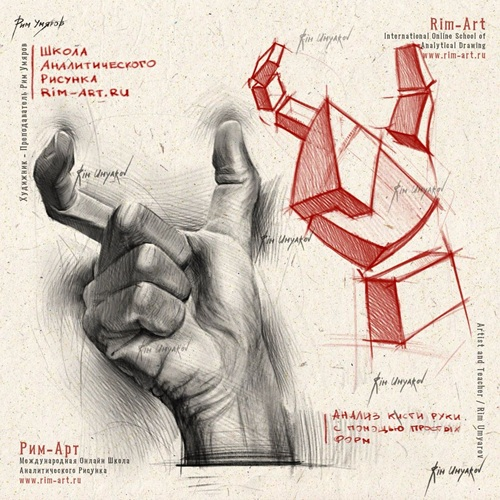
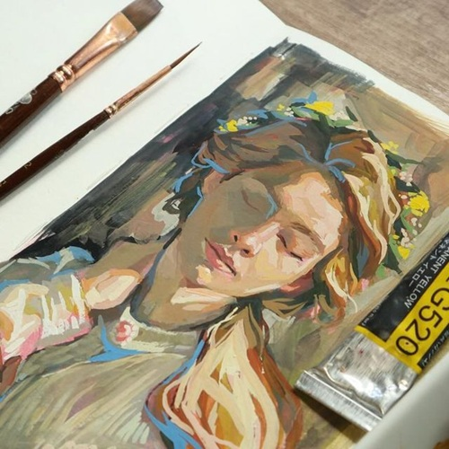

Encontre sua próxima referência:

Nossos cursos

Saiba Mais
Desenho Tradicional
Papel, lápis, caneta, etc.
Aqui é onde você vai aprender os fundamentos mais importantes
do desenho.

Saiba Mais
Escolha das Tintas
Gouache, óleo, acrílica, aquarela.
Este curso vai te guiar do básico ao avançado,
desenvolvendo sua sensibilidade artística com cor e textura!

Modelagem 3D
Ferramentas de modelagem utilizadas em jogos, filmes e projetos.
Grandes
oportunidades no exterior, além dos altos salários da profissão.